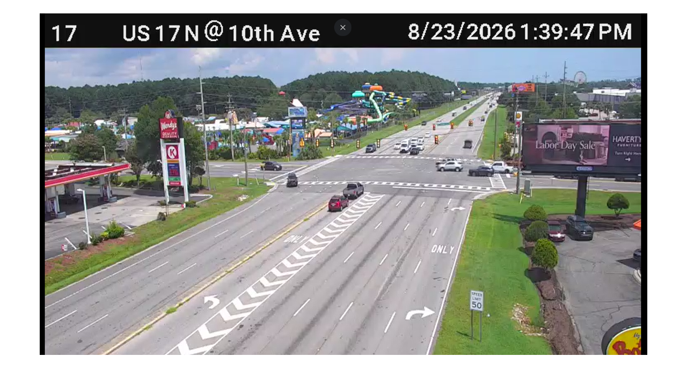
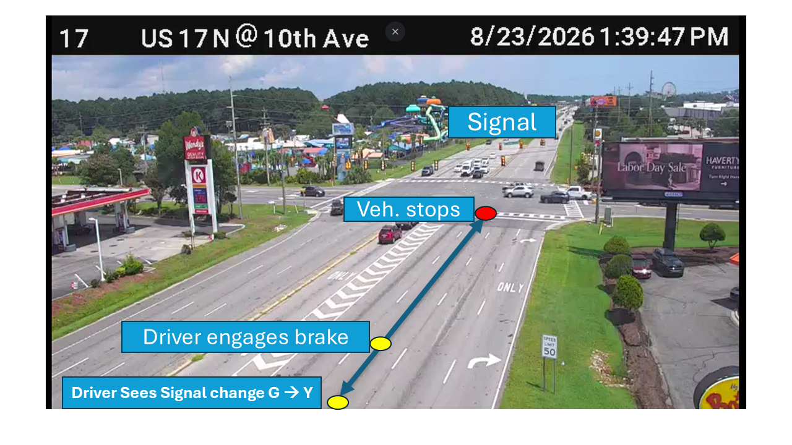
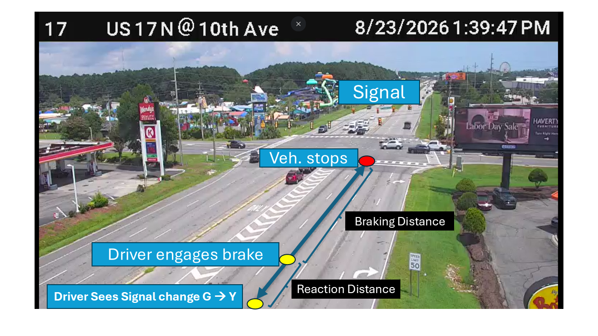
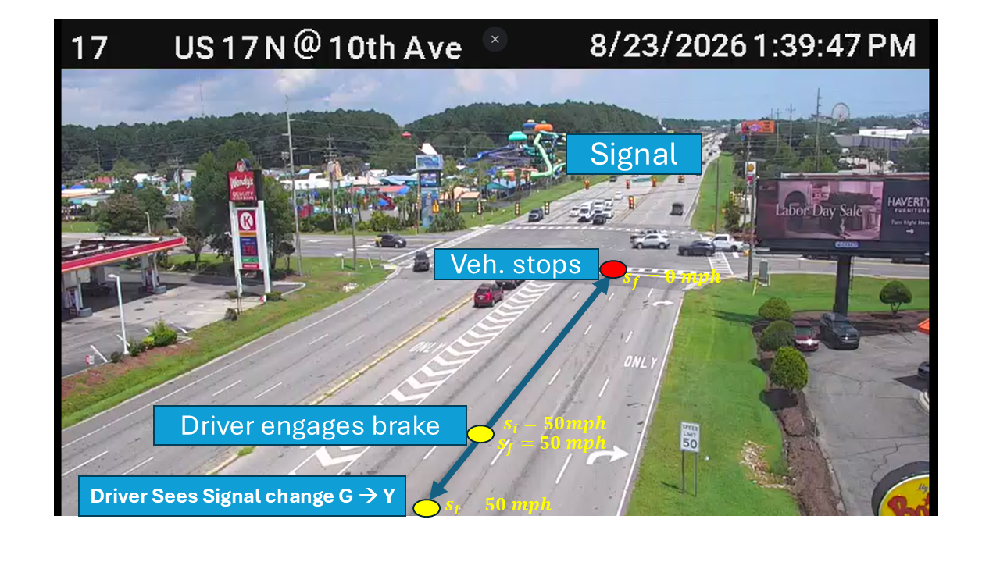
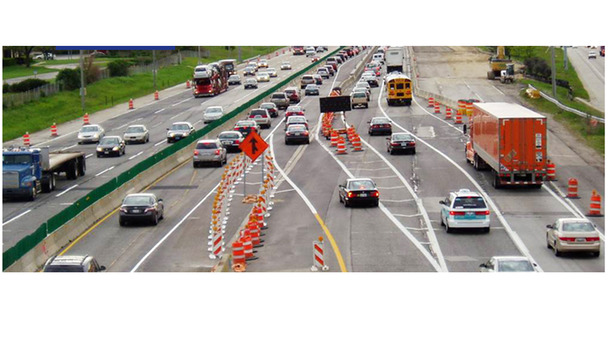
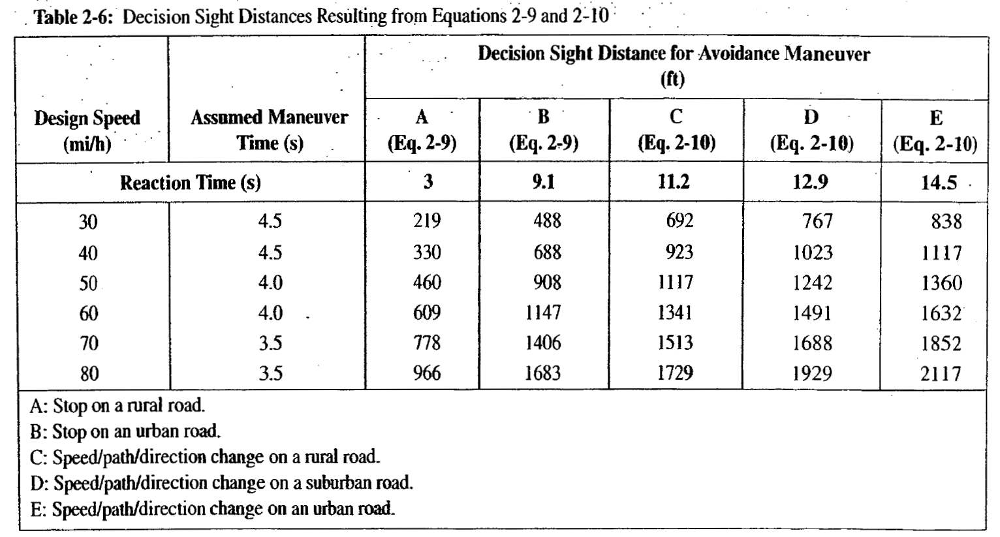

flowchart LR
A[SSD] --> B("$$d_r$$")
A --> C("$$d_b$$")
B --> B1(PRT)
C --> C1(Acceleration)
Ch. 2: Road user and vehicle characteristics
PROBLEM 01
- A section of rural freeway with design speed of 70 mph. On a section of level terrain, 500 feet of stopping sight distance is provided, is it safe? If not, what could be the implications of this sight?
PROBLEM 02
- Given the roadway scenario, how long should the yellow interval of the signal?

CONCEPTS
- Sight Distance (SD)
SIGHT DISTANCE (SD)
- SD: How much of the roadway drivers’ able to see (perceive)
- Types of SD:
- Stopping SD (SSD)
- Decision SD (DSD)
- Passing SD (PSD)
- Intersection SD (ISD)
BASIC EQUATIONS
\(d = St\)
\(S_f^2 = S_i^2 + 2ad\)
Where:
- \(S_f\)= final speed, \(ft/s\) or \(mph\)
- \(S_i\)= initial speed, \(ft/s\) or \(mph\)
- \(a\)= acceleration/deceleration, \(ft/s^2\)
- \(t\)= time/duration, seconds (\(s\)) or hours (\(h\))
- \(d\)= distance traveled, feet (\(ft\))
UNIT CONVERTION
- 1 mile = 5280 feet
- 1 hour = 3600 sec
Convert mph to ft/sec (fps)
\[1 mph = \frac{5280}{3600} fps = 1.47 fps\]
Stopping SD: SSD

Stopping SD: SSD

Stopping SD: SSD
- SSD = Reaction Distance (\(d_r\)) + Braking Distance (\(d_b\))
SSD: Reaction Distance
PRT (\(t_r\)) ~ Perception-Reaction Time
PRT (\(t_r\)) ~ f(age, fatigue, complexity of roadway, DUI)
\[d = St\] \[d_r (ft) = S (fps) \times t_r(sec)\] \[d_r (ft) = 1.47 \times S (mph) \times t_r(sec)\]
- AASHTO Design value: 2.5 sec
- ITE Signal Design value: 1 sec (Expectancy)
SSD: Braking Distance
- \(S_f^2 = S_i^2 + 2ad_b\)
- \[d_b=\frac{S_i^2 - S_f^2}{2a}\]
- \[d_b=\frac{S_i^2 - S_f^2}{2(Fg)}\]
- \[d_b=\frac{(1.47)^2 \times S_i^2 - S_f^2}{2(F \times 32.2)}\]
- \[d_b= \frac{S_i^2 - S_f^2}{30(F \pm G)}\]
- \(S_i\) or \(S_f\): speed
- \(d_b\): Braking Distance
- \(G\): Grade (%)
- \(F=\frac{a}{g}\): Coefficient of friction,
- \(a\): deceleration rate
SSD: Full Equation
- SSD = Reaction Distance (\(d_r\)) + Braking Distance (\(d_b\))
flowchart LR
A[SSD] --> B("$$d_r$$")
A --> C("$$d_b$$")
B --> B1(PRT)
C --> C1(Acceleration)
- \(d_{ssd}=d_r + d_b\)
- \(d_{ssd}=1.47S_i t + \frac{S_i^2 - S_f^2}{30(F \pm G)}\)
SSD: Full Equation
- \(d_{ssd}=1.47S_i t + \frac{S_i^2 - S_f^2}{30(F \pm G)}\)
- Design Stds:
- \(a = 11.2 fps\) –> \(F=\frac{a}{g}=\frac{11.2 f/s^2}{32.2 f/s^2}=0.348\)

PROBLEM 01
- A section of rural freeway with design speed of 70 mph. On a section of level terrain, 500 feet of stopping sight distance is provided, is it safe? If not, what could be the implications of this sight?
PROB 01: UNDERSTAND (Part 1)
- A section of rural freeway with design speed of 70 mph. On a section of level terrain, 500 feet of stopping sight distance is provided, is it safe? If not, what could be the implications of this sight?
PROB 01: APPLY (Part 1)
1. A section of rural freeway with design speed of 70 mph. On a section of level terrain, 500 feet of stopping sight distance is provided, is it safe? If not, what could be the implications of this sight?
- \(d_{ssd}=1.47S_i t + \frac{S_i^2 - S_f^2}{30(F \pm G)}\)
- \(d_{ssd}=1.47 \times 70 \times 2.5 + \frac{70^2 - 0^2}{30(0.348 \pm 0)}\)
- \(d_{ssd} = 257.3 + 469.3 = 726.6 ft\)
PROB 01: INTERPRET (Part 1)
1. A section of rural freeway with design speed of 70 mph. On a section of level terrain, 500 feet of stopping sight distance is provided, is it safe? If not, what could be the implications of this sight?
- Since \(d_{ssd}\) = \(726.6 ft\) is higher that \(500 ft\), the provided SSD is NOT safe
PROB 01: UNDERSTAND (Part 2)
- A section of rural freeway with design speed of 70 mph. On a section of level terrain, 500 feet of stopping sight distance is provided, is it safe? If not, what could be the implications of the provided sight distance?

PROB 01: APPLY (Part 2)
- A section of rural freeway with design speed of 70 mph. On a section of level terrain, 500 feet of stopping sight distance is provided, is it safe? If not, what could be the implications of the provided sight distance?
- \(d_{ssd}=1.47S_i t + \frac{S_i^2 - S_f^2}{30(F \pm G)}\)
- \(500=1.47 \times 70 \times 2.5 + \frac{70^2 - S_f^2}{30(0.348 \pm 0)}\)
- \(S_f = 48.6 mph\)
PROB 01: INTERPRET (Part 2)
- A section of rural freeway with design speed of 70 mph. On a section of level terrain, 500 feet of stopping sight distance is provided, is it safe? If not, what could be the implications of the provided sight distance?
- If \(500 ft\) is provided, the speed of the collision would be at a speed of \(48.6mph\)
PROBLEM 02
- Given the roadway scenario, how long should the yellow interval of the signal?
PROB 02: UNDERSTAND
- Given the roadway scenario, how long should the yellow interval of the signal?
PROB 02: APPLY
- Given the roadway scenario, how long should the yellow interval of the signal?
- \(d_{ssd}=1.47S_i t + \frac{S_i^2 - S_f^2}{30(F \pm G)}\)
- \(d_{ssd}=1.47 \times 50 \times 1 + \frac{50^2 - 0^2}{30(0.348 \pm 0)}\)
- \(d_{ssd} = 73.5 + 293.46 = 312.96 ft\)
yellow interval = Time it takes a veh to travel 312.96 ft at a speed of 50mph
- yellow interval, \(y = \frac{312.96}{50} = 6.25 sec\)
PROB 02: INTERPRET
- Given the roadway scenario, how long should the yellow interval of the signal?
- Yellow interval = 6.25 sec
COMPLEX SCENARIOS for SD

COMPLEX SCENARIOS for SD
- Interchange / Intersection
- Change in XS (e.g. lane drop)
- Toll Plaza
Decision SD: DSD
- DSD: Sight distance based on collision-avoidance decision reaction time
- Stop Maneuver (A or B)
- \(d_{dsd}=1.47S_i t + \frac{S_i^2 - S_f^2}{30(F \pm G)}\)
- Speed/path/direction change Maneuver (C/D/E)
- \(d_{dsd}=1.47 S_i (t_r + t_m)\)
- \(t_r\): reaction time for appropriate avoidance maneuver, s
- \(t_m\): maneuver time, s
Decision SD: DSD

\(t_m\)
\(t_r\)
Ch. 2: Road user and vehicle characteristics
END